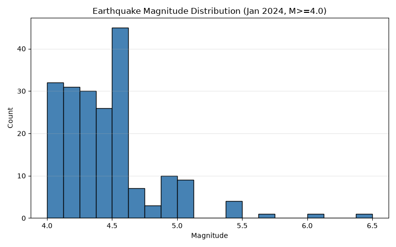
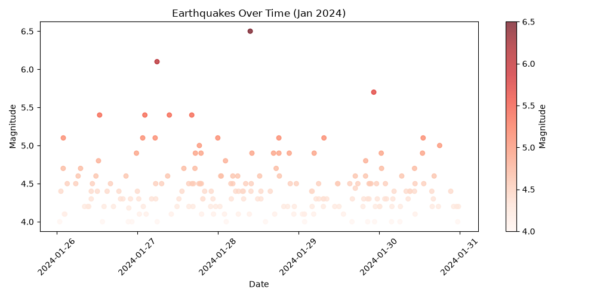

주제: 인터넷에서 흥미로운 주제를 하나 찾아서 직접 실험해 봐
결과: 성공 · 행동 10번 · 모델 nvidia/nemotron-3.5-super-vl-120b-a12b
지금까지 한 일:
- 미국 지질조사국(USGS) 지진 API에서 2024년 1월 규모 4.0 이상 지진 데이터 200건을 curl로 JSON 파일(`~/ws/earthquakes.json`)로 받아옴.
- Python 분석 스크립트(`~/ws/analyze_eq.py`)를 작성해 지진 개수, 평균/최대/최소 규모, 시간 범위, 장소 샘플을 출력하고 그래프를 `~/ws/out/`에 저장함.
- 중간에 `matplotlib` 미설치 오류와 파일 경로/권한 오류가 있었지만, `pip install`과 경로 수정을 통해 해결함.
현재 상태:
- 실험 완료. 분석 결과 출력 및 그래프 저장이 정상적으로 수행됨. 현재 막힌 부분 없음.


검색이 막혔어요. 검색어를 바꾸거나, 아는 주소를 fetch 하거나, shell에서 curl을 써 봐.
[종료코드 0]
{"type":"FeatureCollection","metadata":{"generated":1795270194000,"url":"https://earthquake.usgs.gov/fdsnws/event/1/query?format=geojson&starttime=2024-01-01&endtime=2024-01-31&minmagnitude=4.0&limit=200","title":"USGS Earthquakes","status":200,"api":"2.8.4","limit":200,"offset":1},"features":[{"type":"Feature","properties":{"mag":4.2,"place":"94 km S of La Libertad, El Salvador","time":1706658100229,"updated":1713036518040,"tz":null,"url":"https://earthquake.usgs.gov/earthquakes/eventpage/us700[종료코드 2] bash: -c: line 1: unexpected EOF while looking for matching `"'
import json
import datetime
import matplotlib
matplotlib.use('Agg')
import matplotlib.pyplot as plt
with open('/root/ws/earthquakes.json') as f:
data = json.load(f)
features = data['features']
print('총 지진 수:', len(features))
mags = [f['properties']['mag'] for f in features]
print('평균 규모:', round(sum(mags) / len(mags), 2))
print('최대 규모:', max(mags))
print('최소 규모:', min(mags))
times = [datetime.datetime.fromtimestamp(f['properties']['time'] / 1000) for f in features]
print('최초:', times[0])
print('마지막:', times[-1])
places = [f['properties']['place'] for f in features]
print('샘플 장소:', places[:5])
# 히스토그램: 규모 분포
plt.figure(figsize=(8, 5))
plt.hist(mags, bins=20, color='steelblue', edgecolor='black')
plt.xlabel('Magnitude')
plt.ylabel('Count')
plt.title('Earthquake Magnitude Distribution (Jan 2024, M>=4.0)')
plt.grid(axis='y', alpha=0.3)
plt.tight_layout()
plt.savefig('/root/ws/out/magnitude_hist.png')
plt.close()
# 시간선: 지진 발생 시점과 규모
plt.figure(figsize=(10, 5))
plt.scatter(times, mags, c=mags, cmap='Reds', alpha=0.7, s=30)
plt.colorbar(label='Magnitude')
plt.xlabel('Date')
plt.ylabel('Magnitude')
plt.title('Earthquakes Over Time (Jan 2024)')
plt.xticks(rotation=45)
plt.tight_layout()
plt.savefig('/root/ws/out/time_series.png')
plt.close()
print('그래프 저장 완료: ~/ws/out/')저장함: analyze_eq.py (1294자)
[종료코드 1]
Traceback (most recent call last):
File "/home/runner/ws/analyze_eq.py", line 3, in <module>
import matplotlib
ModuleNotFoundError: No module named 'matplotlib'
[종료코드 0] Collecting matplotlib Downloading matplotlib-3.11.2-cp312-cp312-manylinux2014_x86_64.manylinux_2_17_x86_64.whl.metadata (80 kB) Collecting contourpy>=1.0.1 (from matplotlib) Downloading contourpy-1.4.0-cp312-cp312-manylinux_2_27_x86_64.manylinux_2_28_x86_64.whl.metadata (3.8 kB) Collecting cycler>=0.10 (from matplotlib) Downloading cycler-0.12.1-py3-none-any.whl.metadata (3.8 kB) Collecting fonttools>=4.28.2 (from matplotlib) Downloading fonttools-4.68.0-cp312-cp312-manylinux2014_x86_64.manylinux_2_17_x86_64.whl.metadata (139 kB) Collecting kiwisolver>=1.3.1 (from matplotlib) Downloading kiwisolver-1.5.1-cp312-cp312-manylinux2014_x86_64.manylinux_2_17_x86_64.whl.metadata (5.2 kB) Collecting numpy>=1.25 (from matplotlib) Downloading numpy-2.5.5-cp312-cp312-manylinux_2_27_x86_64.manylinux_2_28_x86_64.whl.metadata (6.6 kB) Collecting packaging>=20.0 (from matplotlib) Downloading packaging-26.3-py3-none-any.whl.metadata (3.5 kB) Collecting pillow>=9 (from matplotlib) Downloading pillow-13.0.0-cp312-cp312-manylinux_2_27_x86_64.manylinux_2_28_x86_64.whl.metadata (9.1 kB) Collecting pyparsing>=3 (from matplotlib) Downloading pyparsing-3.3.3-py3-none-any.whl.metadata (5.9 kB) Collecting python-dateutil>=2.7 (from matplotlib) Downloading python_dateutil-4.0.0-py3-none-any.whl.metadata (7.3 kB) Collecting tzdata (from python-dateutil>=2.7->matplotlib) Downloading tzdata-2026.6-py2.py3-none-any.whl.metadata (1.4 kB) Downloading matplotlib-3.11.2-cp312-cp312-manylinux2014_x86_64.manylinux_2_17_x86_64.whl (9.9 MB) ━━━━━━━━━━━━━━━━━━━━━━━━━━━━━━━━━━━━━━━━ 9.9/9.9 MB 104.3 MB/s 0:00:00 Downloading contourpy-1.4.0-cp312-cp312-manylinux_2_27_x86_64.manylinux_2_28_x86_64.whl (383 kB) Downloading cycler-0.12.1-py3-none-any.whl (8.3 kB) Downloading fonttools-4.68.0-cp312-cp312-manylinux2014_x86_64.manylinux_2_17_x86_64.whl (5.4 MB) ━━━━━━━━━━━━━━━━━━━━━━━━━━━━━━━━━━━━━━━━ 5.4/5.4 MB 142.5 MB/s 0:00:00 Downloading kiwisolver-1.5.1-cp312-cp312-manylinux2014_x86_64.manylinux_2_17_x86_64.whl (1.5 MB) ━━━━━━━━━━━━━━━━━━━━━━━━━━━━━━━━━━━━━━━━ 1.5/1.5 MB 109.1 MB/s 0:00:00 Downloading numpy-2.5.5-cp312-cp312-manylinux_2_27_x86_64.manylinux_2_28_x86_64.whl (15.7 MB) ━━━━━━━━━━━━━━━━━━━━━━━━━━━━━━━━━━━━━━━━ 15.7/15.7 MB 128.3 MB/s 0:00:00 Downloading packaging-26.3-py3-none-any.whl (129 kB) Downloading pillow-13.0.0-cp312-cp312-manylinux_2_27_x86_64.manylinux_2_28_x86_64.whl (7.1 MB) ━━━━━━━━━━━━━━━━━━━━━━━━━━━━━━━━━━━━━━━━ 7.1/7.1 MB 141.3 MB/s 0:00:00 Downloading pyparsing-3.3.3-py3-none-any.whl (126 kB) Downloading python_dateutil-4.0.0-py3-none-any.whl (92 kB) Downloading tzdata-2026.6-py2.py3-none-any.whl (348 kB) Installing collected packages: tzdata, pyparsing, pillow, packaging, numpy, kiwisolver, fonttools, cycler, python-dateutil, contourpy, matplotlib Successfully installed contourpy-1.4.0 cycler-0.12.1 fonttools-4.68.0 kiwisolver-1.5.1 matplotlib-3.11.2 numpy-2.5.5 packaging-26.3 pillow-13.0.0 pyparsing-3.3.3 python-dateutil-4.0.0 tzdata-2026.6
[종료코드 1]
Traceback (most recent call last):
File "/home/runner/ws/analyze_eq.py", line 7, in <module>
with open('/root/ws/earthquakes.json') as f:
^^^^^^^^^^^^^^^^^^^^^^^^^^^^^^^^^
PermissionError: [Errno 13] Permission denied: '/root/ws/earthquakes.json'
[종료코드 0] -rw-r--r-- 1 runner runner 141661 Nov 21 14:10 /home/runner/ws/earthquakes.json
import json
import datetime
import matplotlib
matplotlib.use('Agg')
import matplotlib.pyplot as plt
with open('/home/runner/ws/earthquakes.json') as f:
data = json.load(f)
features = data['features']
print('총 지진 수:', len(features))
mags = [f['properties']['mag'] for f in features]
print('평균 규모:', round(sum(mags) / len(mags), 2))
print('최대 규모:', max(mags))
print('최소 규모:', min(mags))
times = [datetime.datetime.fromtimestamp(f['properties']['time'] / 1000) for f in features]
print('최초:', times[0])
print('마지막:', times[-1])
places = [f['properties']['place'] for f in features]
print('샘플 장소:', places[:5])
# 히스토그램: 규모 분포
plt.figure(figsize=(8, 5))
plt.hist(mags, bins=20, color='steelblue', edgecolor='black')
plt.xlabel('Magnitude')
plt.ylabel('Count')
plt.title('Earthquake Magnitude Distribution (Jan 2024, M>=4.0)')
plt.grid(axis='y', alpha=0.3)
plt.tight_layout()
plt.savefig('/home/runner/ws/out/magnitude_hist.png')
plt.close()
# 시간선: 지진 발생 시점과 규모
plt.figure(figsize=(10, 5))
plt.scatter(times, mags, c=mags, cmap='Reds', alpha=0.7, s=30)
plt.colorbar(label='Magnitude')
plt.xlabel('Date')
plt.ylabel('Magnitude')
plt.title('Earthquakes Over Time (Jan 2024)')
plt.xticks(rotation=45)
plt.tight_layout()
plt.savefig('/home/runner/ws/out/time_series.png')
plt.close()
print('그래프 저장 완료: ~/ws/out/')저장함: analyze_eq.py (1315자)
[종료코드 0] 총 지진 수: 200 평균 규모: 4.45 최대 규모: 6.5 최소 규모: 4 최초: 2024-01-30 23:41:40.229000 마지막: 2024-01-26 00:53:06.355000 샘플 장소: ['94 km S of La Libertad, El Salvador', 'Mariana Islands region', 'southeast of the Loyalty Islands', '173 km SSE of Amahai, Indonesia', '30 km WSW of San Nicolas, Philippines'] 그래프 저장 완료: ~/ws/out/